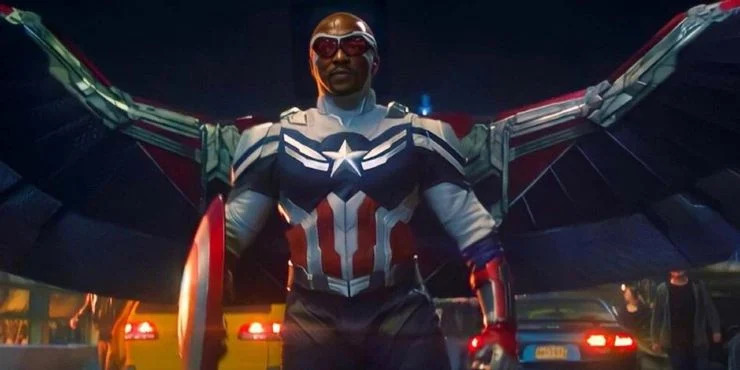

Person1 Thato Modise
Biograpgy and background

Captain America, or Steve Rogers, enjoys drawing, particularly sketching, as he had a passion for art before becoming a super-soldier. He also values physical training, strategic planning, and spending time with friends. Despite his heroic duties, he appreciates quiet moments of reflection and history.